![]()
x = 1
x + 23This workshop provides an introduction to the Python programming language. Python is a popular language that many researchers, data scientists, and engineers use to organize data, visualize results, and conduct statistical and computational analyses.
By the end of this workshop, we hope that you will feel comfortable working independently in Python!
Important Note: Python uses zero-based indexing, which means the first element in all sequences will start at 0. That means the first row of a data frame will be 0, the second row will be 1, and so on. This can be very important if you’re specifying variables or indexing based on location!
Before the workshop, you need to download the Anaconda Navigator and Visual Studio Code. You can think of Visual Studio Code (otherwise known as VS Code) as the RStudio equivalent for Python (and many other languages!). Where things start to differ for Python is the need for the Anaconda Navigator.
Anaconda is an all-in-one app that lets you install, interact with, and run Python packages and code. Within Anaconda, there are multiple Integrated Development Environments, or IDEs, that are specifically designed for writing, editing, and running Python code. You get a code editor, interpreter, and shell all in one place that operates separately from the Python code that some features of your computer run on. An IDE is a really important step to ensuring that your Python code for data analysis doesn’t interfere with any Python on your computer. We’ll use Anaconda in this workshop to interact with Jupyter Notebook since it’s the most similar to R Markdown, but there are many other IDE options.
The other benefit of the Anaconda Navigator is the ability to set up virtual environments without needing to access your computer’s terminal. A virtual environment establishes a space for you to install packages and use a specified version of Python without interfering with Python versions or packages that are needed to run features on your computer. This isolated space allows you to work on all your data projects without bothering your computer system’s Python.
Downloads:
1. Download Anaconda Navigator: https://www.anaconda.com/products/navigator
2. Download VS Code: https://code.visualstudio.com/
3. Install Jupyter within Anaconda Navigator
4. Download the intro-to-coding-2025 folder from COG GitHub (https://github.com/TU-Coding-Outreach-Group/intro-to-coding-2025) by pressing the green Code button and downloading the ZIP folder. This folder contains all the necessary files for this workshop.
Open the Anaconda Navigator and click on Environments.
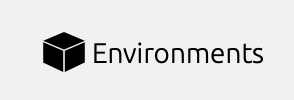
Create a new virtual environment by clicking Create on the bottom left.
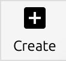
Add a name for the virtual environment and select Python version 3.9.21. Then click Create!
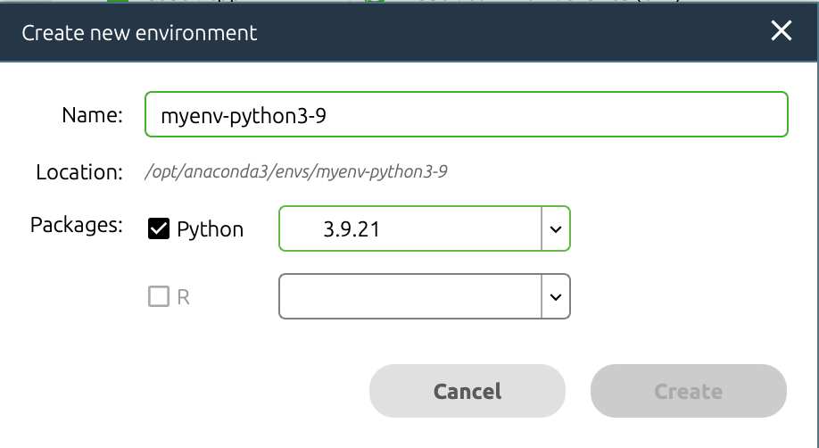
Open VS Code and navigate to left side pane. Click on the extensions button.

Install Data Wrangler, Jupyter, and Python by searching in the search bar and clicking the blue Install. Once they are installed as VS Code extensions, you should see them in the extensions tab.
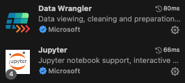
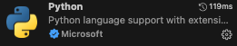
Now we can create a new Jupyter Notebook and launch the virtual environment. Navigate to File > New File and select Jupyter Notebook. If you don’t see Jupyter as an option, close and reopen VS Code. Select Jupyter Notebook to create your Python file.

In the upper right corner of VS Code, launch your virtual environment by clicking “Select Kernel”. Your Anaconda virtual environment should appear as an option to select.
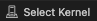
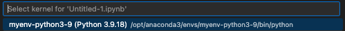
Once you select your virtual environment, your kernel should now show that selection. You are now able to run Python in VS Code using your Anaconda virtual environment!
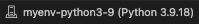
In a typical coding script, every line contains code that the programming language interprets. You can include notes or comments using a # in front of any code. The script will ignore any line or piece of code starting with a #.
Jupyter Notebooks make things even cleaner for you by splitting up the script into “coding chunks”. This allows you to run just a few lines of code at a time, rather than run the entire script in one go.
We can also include more detailed text than just comments by including “markdown chunks”. We can use these to create headers, write explanations, etc. without having to worry about the script interpreting these as code. You’ll notice that any coding chunk is tagged with “Python” in the bottom right and any markdown chunk is tagged with “markdown” to help you keep track. You can hover your mouse below any coding or markdown chunk or any output to create a new chunk.
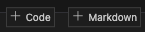
We can also look at the variables and data we have associated with this script by clicking “Jupyter Variables” in the upper part of VS Code. This opens a data viewer on the bottom of the VS code window to help us keep track of variables and data frames as we edit and change them.
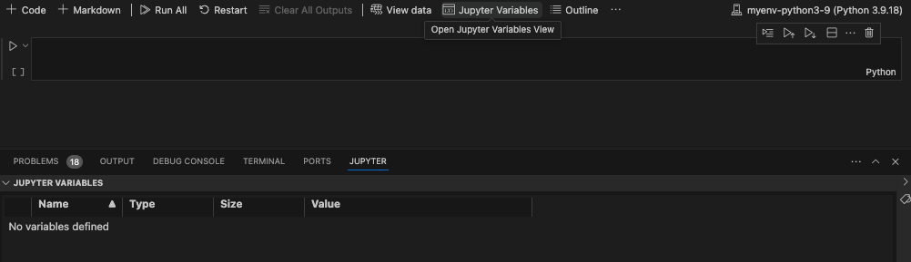
Let’s get a bit comfortable with our first coding chunk. In this simple example, we create a variable called x and set it equal to 1. We then add 2 to x which gives us a value of 3. To run the code chunk, we click the arrow to the left of the code chunk and the value 3 is printed. We can also see that our variable x is now saved in our Jupyter Variables, where we can see the name (x), type (integer), size, and value (1).
x = 1
x + 23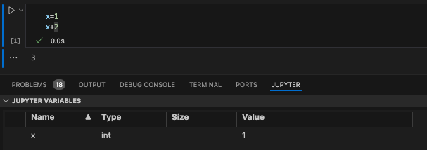
When working with data saved on your computer, you’ll likely run into needing to define a “file path”. This is just a fancy way to refer to the folders and subfolders that exist on someone’s computer. Understanding how to navigate these paths and specify them within a coding script is really important.
Here’s an example of a file path: "/Users/Helen/Documents/COG/intro-to-coding-2025"
Each / of the file path is a separate folder that we are telling the computer to traverse through. We’ll revisit the concept of file paths once we need to find the data we’ll be working with in this workshop.
Now that we have VS Code set up, we can get started with scripting! The first thing we need to do is install some specialized Python libraries. They are groups of files that contain convenient short-cuts or functions someone else already programmed to save us some work. Somebody else already figured out a very quick way to compute a function so now we don’t have to! We just use their tools to do it. You may hear people refer to libraries as packages sometimes, but these are the same thing!
Importantly, we are installing these libraries into our virtual environment, NOT our computer’s Python files.
To install a new library, simply write ! pip install followed by the name of the library. We’ll be using the following libraries today.
! pip install numpy
! pip install pandas
! pip install matplotlib
! pip install scipyNow that we have installed a library, we actually have to load it in to be able to use it. We need to tell Python that we want access to the functions this library has to offer by calling it with import. A lot of Python libraries have common shorthand names (e.g., numpy as np, pandas as pd) that make it quicker to call them, so we will tell Python the name we want to use as shorthand when importing.
import os
import numpy as np
import pandas as pd
import matplotlib.pyplot as plt
import scipy.stats as statsWe can use the %cd command to specify that we want to set a working directory and include the file path in quotes after the space following the command. Then we can load our data using a shortened file path relative to the working directory. We can use . to tell Python to use the entire path and then include the data subfolder and file name, ./data/palmer-penguins.csv.
%cd '/Users/Helen/Documents/COG/intro-to-coding-2025'For today’s workshop, we’ll be working with the palmerpenguins dataset. Please make sure you have palmer-penguins.csv already downloaded! The data set contains size measurements for 344 penguins observed across three islands in the Palmer Archipelago in Antarctica.
References palmerpenguins data originally published in:
Gorman KB, Williams TD, Fraser WR (2014). Ecological sexual dimorphism and environmental variability within a community of Antarctic penguins (genus Pygoscelis). PLoS ONE 9(3):e90081. https://doi.org/10.1371/journal.pone.0090081


We’ll use the read_csv function from pandas to load the data into Python. We want to save the data as an object, so we’ll call it df (aka data frame). To call the read_csv function from pandas we need to first specify the library the function is in (pd) and then the function name (read_csv) with a . between them. We then use the = to save the results from the function into an object called df.
A data frame can be thought of like a spreadsheet in Excel. It contains many cells organized into columns (variables) and rows (observations). Much like the tidy approach to data wrangling, we generally want each row to represent one observation.
df = pd.read_csv('./data/palmer-penguins.csv')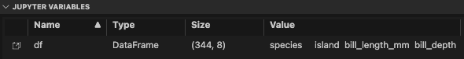
We can further view the data using the Data Wrangler extension we installed earlier by clicking on the square arrow to the left of “df”.
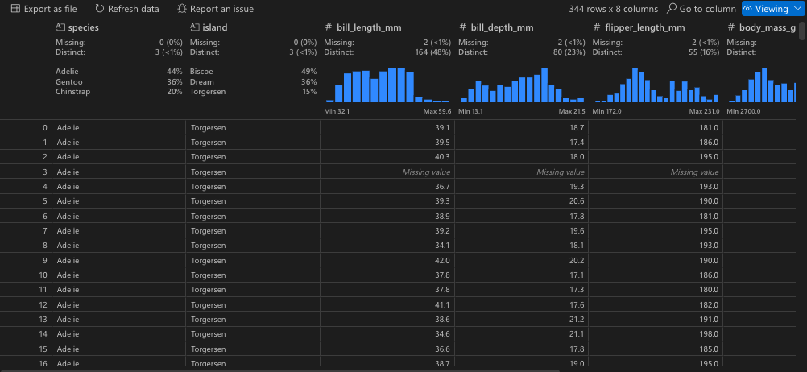
Now that we can see the penguins dataset, let’s get a better idea of what each column represents:
sample_number columns – Represents the continuous numbering sequence for each sample where data was collected
species column – The three types of penguin species
island column – The three types of island
bill_length_mm column – A continuous number denoting bill length in millimeters
bill_depth_mm column – An integer denoting bill depth in millimeters
flipper_length_mm column – An integer denoting flipper length in millimeters
body_mass_g column – A continuous number denoting body mass in grams
sex column – Sex of the penguin
year column – Year when the study took place
There are also multiple ways to preview the data within the script, which can often be faster than viewing the entire data frame every time you add a new line of code.
# preview first five rows
df.head() species island bill_length_mm ... body_mass_g sex year
0 Adelie Torgersen 39.1 ... 3750.0 male 2007
1 Adelie Torgersen 39.5 ... 3800.0 female 2007
2 Adelie Torgersen 40.3 ... 3250.0 female 2007
3 Adelie Torgersen NaN ... NaN NaN 2007
4 Adelie Torgersen 36.7 ... 3450.0 female 2007
[5 rows x 8 columns]# preview last five rows
df.tail() species island bill_length_mm ... body_mass_g sex year
339 Chinstrap Dream 55.8 ... 4000.0 male 2009
340 Chinstrap Dream 43.5 ... 3400.0 female 2009
341 Chinstrap Dream 49.6 ... 3775.0 male 2009
342 Chinstrap Dream 50.8 ... 4100.0 male 2009
343 Chinstrap Dream 50.2 ... 3775.0 female 2009
[5 rows x 8 columns]# print data
print(df) species island bill_length_mm ... body_mass_g sex year
0 Adelie Torgersen 39.1 ... 3750.0 male 2007
1 Adelie Torgersen 39.5 ... 3800.0 female 2007
2 Adelie Torgersen 40.3 ... 3250.0 female 2007
3 Adelie Torgersen NaN ... NaN NaN 2007
4 Adelie Torgersen 36.7 ... 3450.0 female 2007
.. ... ... ... ... ... ... ...
339 Chinstrap Dream 55.8 ... 4000.0 male 2009
340 Chinstrap Dream 43.5 ... 3400.0 female 2009
341 Chinstrap Dream 49.6 ... 3775.0 male 2009
342 Chinstrap Dream 50.8 ... 4100.0 male 2009
343 Chinstrap Dream 50.2 ... 3775.0 female 2009
[344 rows x 8 columns]# get information about the data (spoiler: notice the non-null count differences)
df.info()<class 'pandas.core.frame.DataFrame'>
RangeIndex: 344 entries, 0 to 343
Data columns (total 8 columns):
# Column Non-Null Count Dtype
--- ------ -------------- -----
0 species 344 non-null object
1 island 344 non-null object
2 bill_length_mm 342 non-null float64
3 bill_depth_mm 342 non-null float64
4 flipper_length_mm 342 non-null float64
5 body_mass_g 342 non-null float64
6 sex 333 non-null object
7 year 344 non-null int64
dtypes: float64(4), int64(1), object(3)
memory usage: 21.6+ KBIn Python, there are many data types. Our species, island, and sex variables are objects, which you can think of as text variables. The penguin measurement and weight variables are float64 which is a numpy data type for precise numbers (think accurate decimal points). The year variable is an int64 which is an integer data type also from numpy.
# summary of variables
df.describe() bill_length_mm bill_depth_mm ... body_mass_g year
count 342.000000 342.000000 ... 342.000000 344.000000
mean 43.921930 17.151170 ... 4201.754386 2008.029070
std 5.459584 1.974793 ... 801.954536 0.818356
min 32.100000 13.100000 ... 2700.000000 2007.000000
25% 39.225000 15.600000 ... 3550.000000 2007.000000
50% 44.450000 17.300000 ... 4050.000000 2008.000000
75% 48.500000 18.700000 ... 4750.000000 2009.000000
max 59.600000 21.500000 ... 6300.000000 2009.000000
[8 rows x 5 columns]What if we only want to work with one variable or column in a given data frame? That’s where subsetting comes in! Using the variable names, we can select just one variable from our data frame.
We can use the [] after the data frame name df with the variable name we want to subset in single quotes.
df['species']0 Adelie
1 Adelie
2 Adelie
3 Adelie
4 Adelie
...
339 Chinstrap
340 Chinstrap
341 Chinstrap
342 Chinstrap
343 Chinstrap
Name: species, Length: 344, dtype: objectWe can include any of our preview variables after the brackets to show just a few rows too.
df['species'].head()0 Adelie
1 Adelie
2 Adelie
3 Adelie
4 Adelie
Name: species, dtype: objectWe can also include more than one variable by including another set of brackets and listing the variable names separated by commas.
df[['species', 'year']].head() species year
0 Adelie 2007
1 Adelie 2007
2 Adelie 2007
3 Adelie 2007
4 Adelie 2007We can save these variable subsets as new data frames using the =. Then we can ensure the new data frame was created by previewing the first 10 rows.
df_subset = df[['species', 'year']]
df_subset.head(10) species year
0 Adelie 2007
1 Adelie 2007
2 Adelie 2007
3 Adelie 2007
4 Adelie 2007
5 Adelie 2007
6 Adelie 2007
7 Adelie 2007
8 Adelie 2007
9 Adelie 2007We can also do what’s called a conditional subset, where we select only rows (observations) from a specified variable when another variable contains a certain value. Here, we’ll only include observations from penguins on the Biscoe island and include all variables.
# select only data when island is Biscoe
df_subset = df[df['island'] == 'Biscoe']
df_subset.head(10) species island bill_length_mm ... body_mass_g sex year
20 Adelie Biscoe 37.8 ... 3400.0 female 2007
21 Adelie Biscoe 37.7 ... 3600.0 male 2007
22 Adelie Biscoe 35.9 ... 3800.0 female 2007
23 Adelie Biscoe 38.2 ... 3950.0 male 2007
24 Adelie Biscoe 38.8 ... 3800.0 male 2007
25 Adelie Biscoe 35.3 ... 3800.0 female 2007
26 Adelie Biscoe 40.6 ... 3550.0 male 2007
27 Adelie Biscoe 40.5 ... 3200.0 female 2007
28 Adelie Biscoe 37.9 ... 3150.0 female 2007
29 Adelie Biscoe 40.5 ... 3950.0 male 2007
[10 rows x 8 columns]Sometimes, we may want to use subsetting to get snapshots of unique values in a dataset. We can combine our subsetting syntax with the drop_duplicates() function to get just unique observations of penguin species, islands, and years.
# get a data frame of unique species, islands, and years
df_subset = df[['species','island','year']].drop_duplicates()
df_subset.head() species island year
0 Adelie Torgersen 2007
20 Adelie Biscoe 2007
30 Adelie Dream 2007
50 Adelie Biscoe 2008
68 Adelie Torgersen 2008Alternatively, we can select only rows with these unique island, species, and year values. Notice the difference in output when switching the location of drop_duplicates().
# get a data frame of unique species, islands, and years
df_subset = df.drop_duplicates(subset = ['species','island','year'])
df_subset.head() species island bill_length_mm ... body_mass_g sex year
0 Adelie Torgersen 39.1 ... 3750.0 male 2007
20 Adelie Biscoe 37.8 ... 3400.0 female 2007
30 Adelie Dream 39.5 ... 3250.0 female 2007
50 Adelie Biscoe 39.6 ... 3500.0 female 2008
68 Adelie Torgersen 35.9 ... 3050.0 female 2008
[5 rows x 8 columns]Finally, we can create new variables by combining existing variables or specifying new values. Here, we’ll create a composite variable that combines bill length (mm) and flipper length (mm). Because of the nature of pandas this code will be applied to each row in the data frame individually.
# create new composite variable combining bill length and flipper length
df['bill_flipper_mm'] = df['bill_length_mm'] + df['flipper_length_mm']
df.head() species island bill_length_mm ... sex year bill_flipper_mm
0 Adelie Torgersen 39.1 ... male 2007 220.1
1 Adelie Torgersen 39.5 ... female 2007 225.5
2 Adelie Torgersen 40.3 ... female 2007 235.3
3 Adelie Torgersen NaN ... NaN 2007 NaN
4 Adelie Torgersen 36.7 ... female 2007 229.7
[5 rows x 9 columns]Now you may have noticed the NaN in our new bill_flipper_mm variable. Based on the preview, we can see that it’s in the fourth row of the data frame, but let’s get Python to tell us where it is instead. Remember that Python using zero-based indexing!
# we have some NaNs in new bill_flipper_mm variable
df_subset = df['bill_flipper_mm']
print(df_subset)0 220.1
1 225.5
2 235.3
3 NaN
4 229.7
...
339 262.8
340 245.5
341 242.6
342 260.8
343 248.2
Name: bill_flipper_mm, Length: 344, dtype: float64We can use the isna() function on df_subset and ask for the index (row number) of any missing values. In Python, you may encounter missing values that are coded as NaN, None or NULL. Missing values can be represented differently depending on the library you’re working in, but for pandas you’ll most often encounter NaN, especially if you’re working with a data set that previously existed in R (which is true for the palmer penguins data!).
df_subset.isna() asks Python to find missing values within df_subset and df_subset[].index asks Python to tell us the index (row number) of some element of the data. By placing the first command within the square brackets, we tell Python to give us the index of missing values.
df_subset[df_subset.isna()].indexIndex([3, 271], dtype='int64')Aha! It turns out we not only have a missing value at index 3 (row number 4, because Python starts rows at 0!), but we also have have one at index 271 (row number 272). We know this is the case for our bill_flipper_mm variable, but let’s also see if other variables are missing data at these row indices. We can do this using the iloc() function and specifying the 3 and 271 indices.
This returns a true/false (boolean) output where True means the value at that index for that variable is missing.
df.iloc[[3,271]].isna() species island bill_length_mm ... sex year bill_flipper_mm
3 False False True ... True False True
271 False False True ... True False True
[2 rows x 9 columns]We have missing data in bill_length_mm and sex too! We should check the entire data frame for other missing data too.
Now instead of using df_subset[df_subset.isna()].index, we can specify checking the entire data frame df. We also want to tell Python to give us the index of any missing value, so we need to include any(). Finally, we’ll save this as a new object called missing_indices.
missing_indices = df[df.isna().any(axis=1)].index
# print
missing_indicesIndex([3, 8, 9, 10, 11, 47, 178, 218, 256, 268, 271], dtype='int64')Wow! Let’s see what variables these missing data are in. We can use iloc() again.
df.iloc[missing_indices].isna() species island bill_length_mm ... sex year bill_flipper_mm
3 False False True ... True False True
8 False False False ... True False False
9 False False False ... True False False
10 False False False ... True False False
11 False False False ... True False False
47 False False False ... True False False
178 False False False ... True False False
218 False False False ... True False False
256 False False False ... True False False
268 False False False ... True False False
271 False False True ... True False True
[11 rows x 9 columns]Now that we know missing data exists in the data frame, let’s save a subset that only includes rows where no variable has a missing value. We can use the missing_indices we already identified and leverage a new function called drop() to drop rows that match the missing value indices.
df_no_na = df.drop(index=missing_indices)And next time, we can use a function to identify and remove rows with missing values all in one step!
df_no_na = df.dropna()Now let’s check our new data frame using info() and we should see that all non-null values are equal!
df_no_na.info()<class 'pandas.core.frame.DataFrame'>
Index: 333 entries, 0 to 343
Data columns (total 9 columns):
# Column Non-Null Count Dtype
--- ------ -------------- -----
0 species 333 non-null object
1 island 333 non-null object
2 bill_length_mm 333 non-null float64
3 bill_depth_mm 333 non-null float64
4 flipper_length_mm 333 non-null float64
5 body_mass_g 333 non-null float64
6 sex 333 non-null object
7 year 333 non-null int64
8 bill_flipper_mm 333 non-null float64
dtypes: float64(5), int64(1), object(3)
memory usage: 26.0+ KBAn if-else statement is a powerful and flexible tool that allows a programming script to make decisions and execute different paths based on specific conditions.
You can think of an if-else statement like a fork in the road: if a certain condition is true, the program follows one path, and if the condition is false, it follows an alternative path.
# set x
x = 10
# if / else
if x > 5:
print("x is less than 20")
else:
print("x is greater than 20")x is less than 20# if / else with multiple conditions
if x < 5:
print("x is less than 5")
elif x < 20:
print("x is somewhere between 5 and 20")
else:
print("x is greater than 20")x is somewhere between 5 and 20Let’s use an example that’s a bit more relevant to our data. We will categorize bill_flipper_mm into big and small groups depending on whether it’s above or below the median length.
# get median value
median_value = df_no_na['bill_flipper_mm'].median()
# show
median_value242.5We can then combine our median with an if-else statement to create a new variable and populate each row with big or small. To tell Python to perform this if-else statement row-by-row, we need to include lambda row: within an apply() statement.
# group penguin as "small" if bill_flipper_mm is below the median and "big" if above the median
df_no_na['bill_flipper_group'] = df_no_na.apply(lambda row: 'small' if
row['bill_flipper_mm'] <= median_value
else 'big', axis = 1)
df_no_na.head() species island bill_length_mm ... year bill_flipper_mm bill_flipper_group
0 Adelie Torgersen 39.1 ... 2007 220.1 small
1 Adelie Torgersen 39.5 ... 2007 225.5 small
2 Adelie Torgersen 40.3 ... 2007 235.3 small
4 Adelie Torgersen 36.7 ... 2007 229.7 small
5 Adelie Torgersen 39.3 ... 2007 229.3 small
[5 rows x 10 columns]Instead of telling Python to execute code row-by-row, we can leverage for loops to iterate through a process for a given number of times. Let’s use a for loop to tell Python to print all our penguin bill_flipper_mm values and the corresponding bill_flipper_group to visually match the first five rows.
We’ll use a function called iterrows() to do this row-by-row and print these variables. We’ll use some cool Python syntax to print varying text alongside fixed text.
for index, row in df_no_na[0:5].iterrows():
print(f"Index: {index}, Length: {row['bill_flipper_mm']}, Group: {row['bill_flipper_group']}")Index: 0, Length: 220.1, Group: small
Index: 1, Length: 225.5, Group: small
Index: 2, Length: 235.3, Group: small
Index: 4, Length: 229.7, Group: small
Index: 5, Length: 229.3, Group: smallThere are two common types of data frame structures you’ll encounter: wide data and long data. Wide data contains one row per individual, with many variables across columns. This wide format is typically what you find with Excel spreadsheets. Conversely, long data densely packs observations across multiple rows. For a lot of statistical analyses and data visualizations, long format is typically useful, while wide format is useful for descriptive statistics.
Our penguin data is currently in wide format, with each row representing one penguin. But let’s say we want to show how bill length, bill depth, and flipper length differ across penguin species (foreshadowing the statistical analysis section and data visualization section).
We currently have multiple variables for bill length, bill depth, and flipper length, so we can move from wide to long format by combining the values from these three variables and creating a new variable that tells Python what each value represents. That will allow us to make comparisons later down the line.
We can do this using the melt() function from pandas. We need to specify the grouping variable (species), the variables we want to pivot longer (bill_length_mm, bill_depth_mm, and flipper_length_mm), the new variable name for the measurement types (measurement) and the new variable name to store the measurement values into (values).
df_long = df_no_na.melt(id_vars = 'species', value_vars = ['bill_length_mm', 'bill_depth_mm', 'flipper_length_mm'], var_name = 'measurement', value_name = 'values')
df_long.head() species measurement values
0 Adelie bill_length_mm 39.1
1 Adelie bill_length_mm 39.5
2 Adelie bill_length_mm 40.3
3 Adelie bill_length_mm 36.7
4 Adelie bill_length_mm 39.3Let’s use the df_long data frame to complete some statistical analyses and then create some data visualizations to show off our results!
We will start with three common statistical tests: t-tests, ANOVA, and linear regression. Our goal is to compare the anatomical measurements across penguin species.
A one-way analysis of variance (ANOVA) test allows us to compare the means of two or more groups and determine if they differ from each other. We’ll use the f_oneway function from scipy to run a one-way ANOVA test.
QUESTION: Does bill length differ across penguin species?
HYPOTHESIS: There are differences in bill length across species.
DEPENDENT VARIABLE: bill_length_mm
INDEPENDENT VARIABLE: species
# subset df_long to only include bill_length_mm values
# remember our conditional subsetting from earlier!
df_long_anova = df_long[df_long['measurement'] == 'bill_length_mm']
# now create three data frames for each penguin species
adelie_anova = df_long_anova[df_long_anova['species'] == "Adelie"]
gentoo_anova = df_long_anova[df_long_anova['species'] == "Gentoo"]
chinstrap_anova = df_long_anova[df_long_anova['species'] == "Chinstrap"]
# perform one-way ANOVA
anova_result = stats.f_oneway(adelie_anova['values'], gentoo_anova['values'], chinstrap_anova['values'])
# print results
anova_resultF_onewayResult(statistic=397.29943741282796, pvalue=1.3809842053151752e-88)A two-sample t-test allows us to compare the means of two independent groups and determine if their averages differ from each other. We’ll use the ttest_ind function from scipy to run an independent (two samples) t-test. We can change equal_var to True if we assume the populations have equal variance or False if we assume the populations do not have equal variance (Welch’s t-test).
QUESTION: Does average bill length differ between Adelie and Gentoo penguins?
HYPOTHESIS: One average, there are differences in bill length between Adelie and Gentoo penguins.
DEPENDENT VARIABLE: bill_length_mm
INDEPENDENT VARIABLE: species
# run t-test using species data frames from ANOVA
# assume unequal variances
ttest_result = stats.ttest_ind(adelie_anova['values'], gentoo_anova['values'], equal_var = False)
# print results
ttest_resultTtestResult(statistic=-24.286066500471392, pvalue=7.821528746388473e-66, df=233.5085891130877)A bivariate linear regression can be used when both dependent (outcome; y) and independent (predictor; x) variables are continuous. We’ll use the linregress function from scipy to calculate the linear least squares regression for two penguin measurements.
We’ll have to do a little more data manipulation to get our outcome and predictor variables ready.
QUESTION: Regardless of penguin species, does flipper length predict bill length?
HYPOTHESIS: As flipper length increases, bill length also increases.
DEPENDENT VARIABLE: bill_length_mm
INDEPENDENT VARIABLE: flipper_length_mm
# subset df_long to only include bill_length_mm and flipper_length_mm
df_reg_bill = df_long[df_long['measurement'] == 'bill_length_mm']
df_reg_flipper = df_long[df_long['measurement'] == 'flipper_length_mm']
# do regression (x = independent, y = dependent)
slope, intercept, r_value, p_value, std_err = stats.linregress(df_reg_flipper['values'], df_reg_bill['values'])
# print slope and p-value
print(f'slope: {slope}, p-value: {p_value}')slope: 0.2548247184821525, p-value: 7.211340708096832e-42Now that we have some statistical tests completed, let’s view the results using data visualizations!
We’ll use matplotlib to create data visualizations, where each element of the plot needs to be added with a separate line of code. In order to view the plot, you need to include plt.show() as the final line to tell Python to print your beautiful figure for all to see!
When visualizing the result of an ANOVA test, we want to calculate the means of each group and plot a bar as tall as the mean of that group. We first need to calculate the group means, then calculate the standard error for each group, and finally, we can use those values to create a bar plot with error bars.
# get species bill_length_mm means, standard deviations, and species names
means = [adelie_anova['values'].mean(), chinstrap_anova['values'].mean(), gentoo_anova['values'].mean()]
sds = [adelie_anova['values'].std(), chinstrap_anova['values'].std(), gentoo_anova['values'].std()]
species = ['Adelie', 'Chinstrap', 'Gentoo']
# plot
# bars showing species means
plt.bar(species, means, yerr = sds, color = ['orange','purple','teal'], capsize = 5, edgecolor = 'black')
# y axis label and title
plt.ylabel('Bill Length (mm)')
plt.title('Bill Length (mm) by Species')
# actually show the plot
plt.show()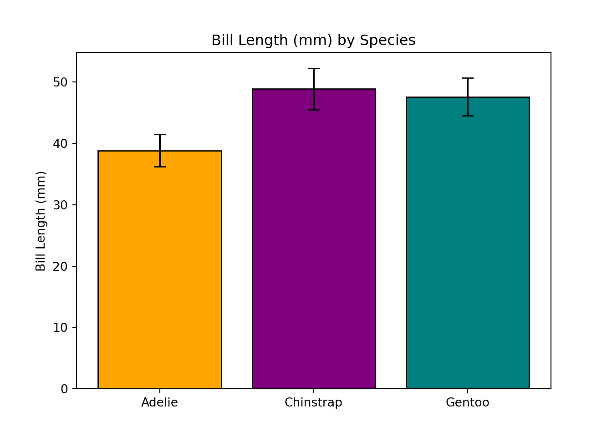
# save x and y data points
x = df_reg_flipper['values']
y = df_reg_bill['values']
# calculate a predicted fitted line using regression equation (y = slope * x + intercept)
y_pred = slope * x + intercept
# plot
# data points
plt.scatter(x, y, color = 'black', label = 'data points')
# fitted regression line
plt.plot(x, y_pred, color = 'red', label = f'fitted line: y = {slope:.2f}x + {intercept:.2f}')
# axis labels
plt.xlabel('Flipper Length (mm)')
plt.ylabel('Bill Length (mm)')
# plot title and legend
plt.title('Association Between Flipper and Bill Length')
plt.legend()
# actually show the plot
plt.show()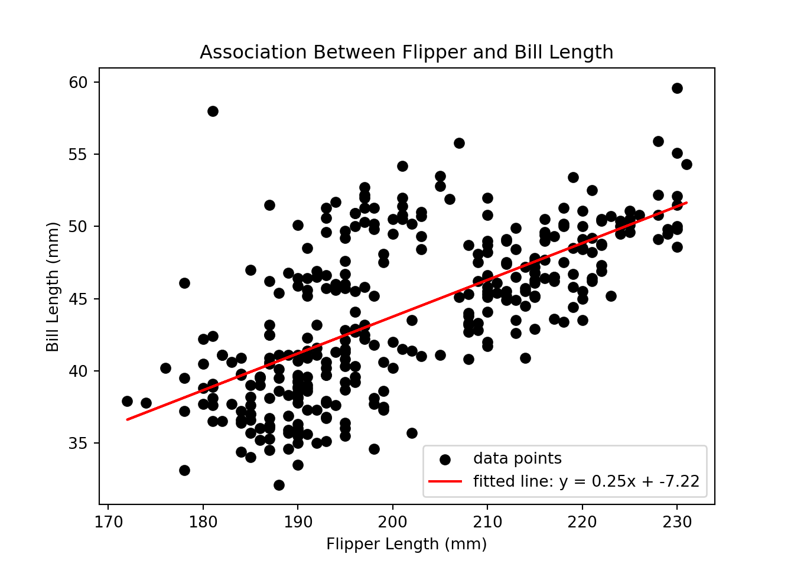
Congratulations on making it through each of the sections of this workshop! To end this Python introduction, we wanted to put together an entire analytic pipeline that you can refer back to when analyzing your own data in the future. We will load Python libraries, read in data, clean up data, run a t-test, and finally, create a nice data visualization.
The goal of this analysis is to examine whether bill length significantly differs from flipper length in our sample of penguins, regardless of penguin species. Below is a complete pipeline of how you might address this question using the tools and libraries we introduced in this workshop.
# Step 1: install and load Python libraries
! pip install numpy
! pip install pandas
! pip install matplotlib
! pip install scipy
import os
import numpy as np
import pandas as pd
import matplotlib.pyplot as plt
import scipy.stats as stats
# Step 2: set working directory
%cd '/Users/Helen/Documents/COG/intro-to-coding-2025'
# Step 3: load data
df = pd.read_csv('./data/palmer-penguins.csv')
# Step 4: subset to only columns of data you are interested in
df_subset = df[['sample_number','species','bill_length_mm','flipper_length_mm']]
# Step 5: pivot the data from wide to long format
df_long = df_subset.melt(id_vars = ['species','sample_number'], value_vars = ['bill_length_mm','flipper_length_mm'], var_name = 'measurement', value_name = 'values')
# Step 6: clean data and remove any rows with missing values
df_long_complete = df_long.dropna()
# Step 7: run an independent samples t-test to determine if bill length and flipper length differ
ttest_bill = df_long_complete[df_long_complete['measurement'] == 'bill_length_mm']
ttest_flipper = df_long_complete[df_long_complete['measurement'] == 'flipper_length_mm']
ttest_result = stats.ttest_ind(ttest_bill['values'], ttest_flipper['values'], equal_var = True)
ttest_result
# Step 8: create a bar plot to visualize results
means = [ttest_bill['values'].mean(), ttest_flipper['values'].mean()]
sds = [ttest_bill['values'].std(), ttest_flipper['values'].std()]
types = ['bill','flipper']
plt.bar(types, means, yerr = sds, color = ['pink','yellow'], capsize = 5, edgecolor = 'black')
plt.ylabel('Length (mm)')
plt.title('Bill vs. Flipper Length (mm)')
plt.show()Congratulations! You have completed this introductory Python workshop! Hopefully you feel like you got a good introduction to programming in Python. Learning to code takes time and practice, so try not to feel discouraged if things aren’t clicking right away - it’s taken me many years to get comfortable coding!
If you have any specific questions about this workshop or Python programming, feel free to email me at helen_schmidt@temple.edu. Thanks for following along!